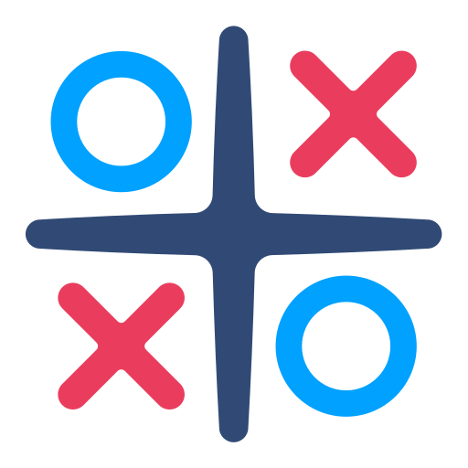
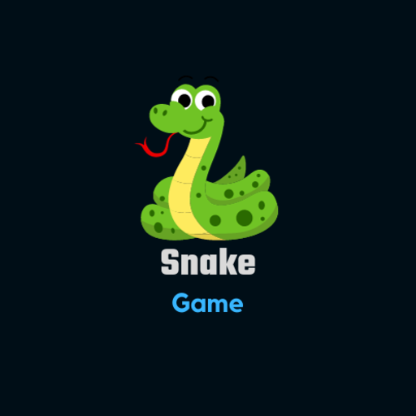
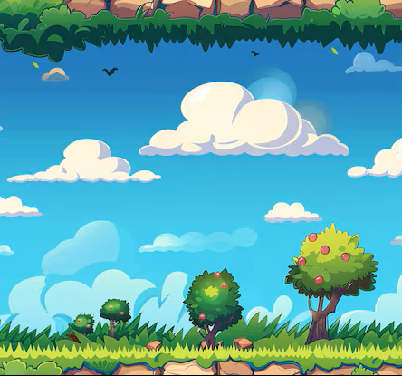
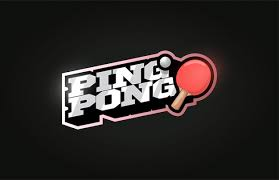
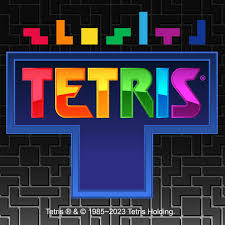
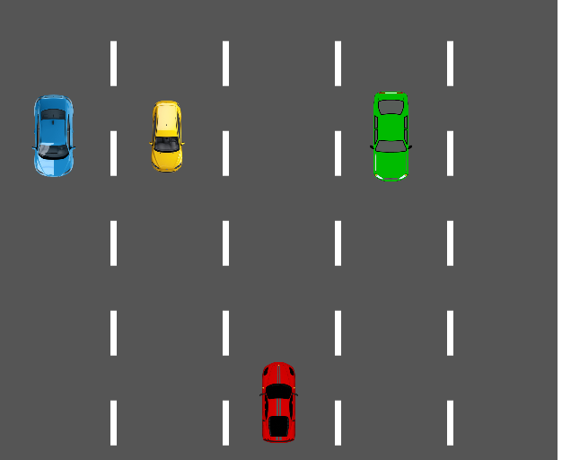
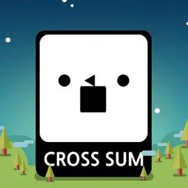
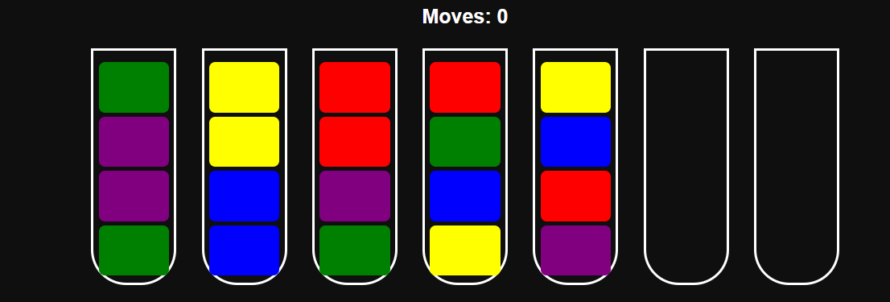

Rock Paper Scissors
Interactive game with dynamic result logic.
▶ Play Game

Tic Tac Toe
Dynamic winner detection with clean UI logic.
▶ Play Game

Snake Game
Canvas-based game with score tracking & smooth restart.
▶ Play Game

Flappy Bird
Collision detection with animated bird mechanics.
▶ Play Game

Pong Game
Classic paddle game with real-time ball physics.
▶ Play Game

Tetris
Grid-based block rotation & row clearing logic.
▶ Play Game

Car Racing
Obstacle avoidance with increasing difficulty.
▶ Play Game
Match The Image
Memory-based card matching game with flip animation logic.
▶ Play Game

Cross Sum
Grid-based puzzle where row and column sums must match the target numbers.
▶ Play Game

Water Color Sort
Sort the colored water into the correct tubes using logic.
▶ Play Game